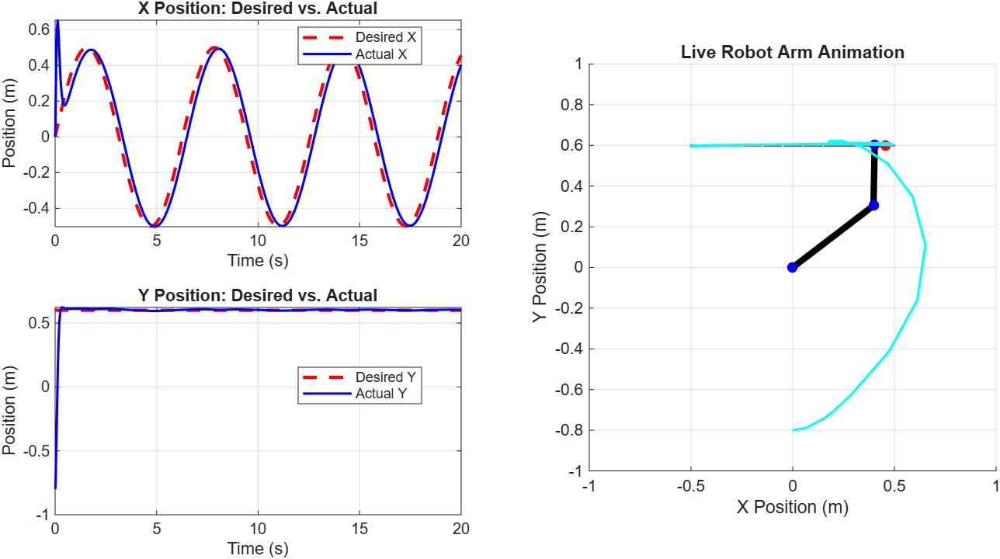
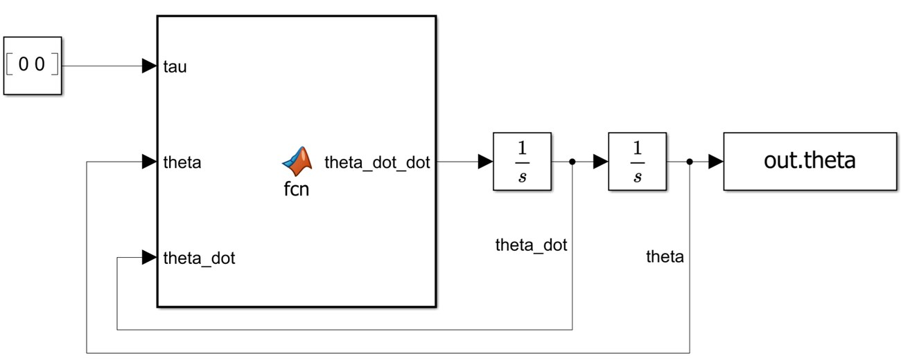
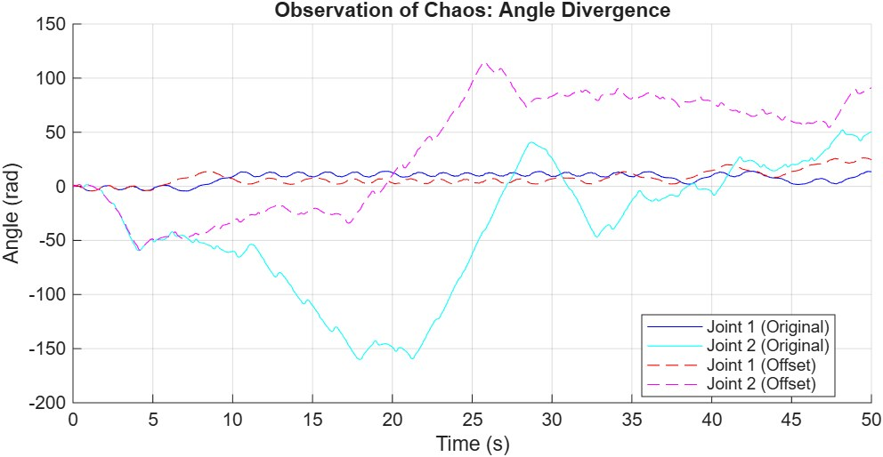
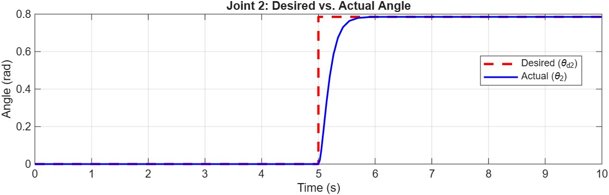
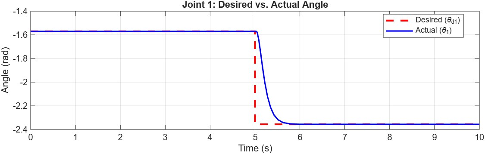
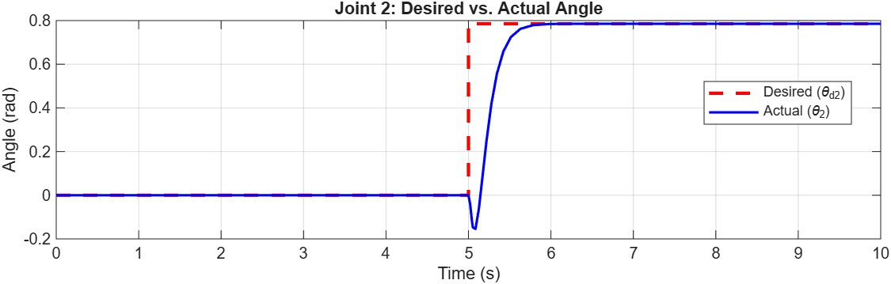
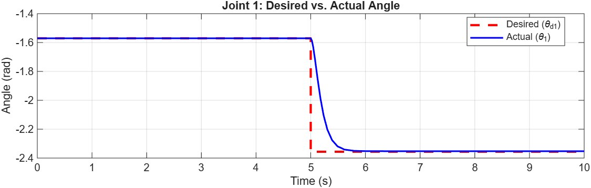
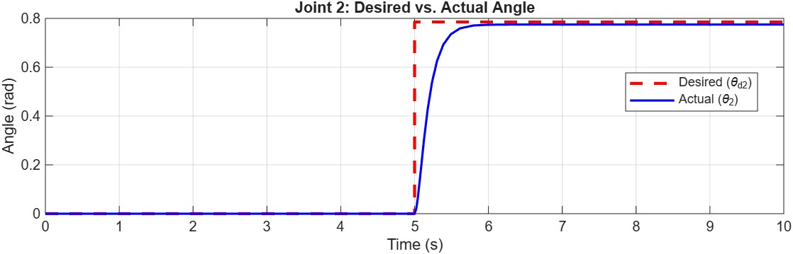
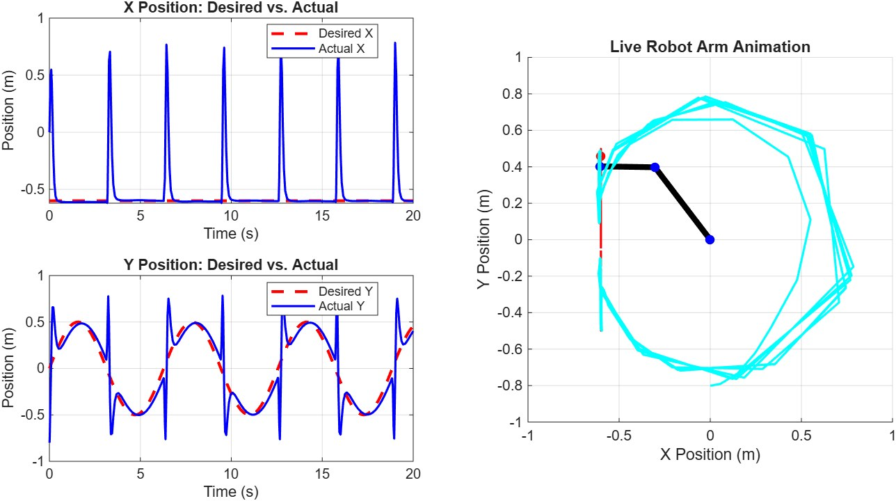

Computed-torque control of a 2-link arm, from joints to Cartesian
A planar two-link arm is coupled, nonlinear and, left alone, chaotic. I modelled it, then built up its controller one problem at a time: weak motors, a wrong model, and finally tracking straight lines in x–y through inverse kinematics.
Course
ME 282, SJSU, Spring 2026
System
2-link planar arm, 0.5 m and 0.3 m links, torque-controlled joints
Stack
MATLAB, Simulink, MATLAB function blocks, custom animation
Outcome
Zero steady-state error under a 4% mass mismatch; stable at the workspace edge

Cartesian line tracking with IK and σ = 10: desired (red) vs. actual (blue), with the live arm
/roadmap
One problem at a time
Each stage keeps the controller from the one before and adds what the new problem needs.
Equations of motion I can simulate, and a feel for how sensitive this system is.

Simulink plant: torque in, joint angles out

two nearly identical starts diverge completely
What I built
I derived the dynamics with Lagrangian mechanics in the standard form M(θ)θ̈ + C(θ, θ̇)θ̇ + N(θ) = τ: an inertia matrix that changes with the elbow angle, Coriolis and centripetal terms, and gravity torques. The plant is a MATLAB function block in Simulink that solves for θ̈, integrated twice, with an animation of the arm drawn from the joint angles.
With no torque applied the arm is a double pendulum. Starting two simulations a hair apart, the joint angles track each other for a few seconds and then diverge completely: it's chaotic.
Concepts
Lagrangian dynamics
Inertia, Coriolis and gravity matrices
Simulink modelling
Chaos / sensitivity to initial conditions
Challenges and fixes
problem
A chaotic plant means small model errors or disturbances grow quickly if nothing corrects them.
fix
Everything that follows is feedback built on the model, and later stages test exactly what happens when the model is wrong.
02
Computed-torque control
Cancel the arm's nonlinear dynamics so each joint behaves like a simple, tunable second-order system.
joint 1 following a step command

joint 2 following a step command
What I built
The controller uses the model to cancel the dynamics: τ = M(θ)(θ̈d + K₁ė + K₂e) + C(θ, θ̇)θ̇ + N(θ). What's left is linear, decoupled error dynamics, ë + K₁ė + K₂e = 0 for each joint, with the gains set from a single bandwidth λ (K₁ = 2λ, K₂ = λ², critically damped). With ±50 N·m available, each joint catches a step command within about a second with no steady-state error.
Concepts
Feedback linearization
Computed-torque control
Error dynamics
Pole placement
Challenges and fixes
problem
Coupled joints: moving one link pushes the other through inertia, Coriolis and gravity terms.
fix
Cancelling M, C and N inside the control law decouples them, so each joint can be tuned on its own.
03
Make it work with weak motors
Real actuators saturate. See what breaks at ±5 N·m and fix it.

±5 N·m: joint 1

±5 N·m: joint 2 dips the wrong way first
What I built
Dropping the torque limit from ±50 to ±5 N·m is like swapping in much weaker motors. The controller still asks for an instant move, but the motors can't deliver it. I then added an inverse-dynamics feedforward: it computes the torque needed to follow the desired path from M, C and N ahead of time, so the PD part only cleans up small errors.
Concepts
Actuator saturation
Inverse-dynamics feedforward
Reactive vs. proactive control
Challenges and fixes
problem
At ±5 N·m, joint 2 dips in the wrong direction before recovering: joint 1 swings hard, and the coupling drags joint 2 back faster than its weak motor can resist.
fix
Inverse-dynamics feedforward anticipates those coupling torques before they cause an error. Tracking improved drastically.
04
Stay accurate when the model is wrong
The controller believes link 1 weighs 0.50 kg; the real one is 0.48 kg.

with inverse-dynamics feedforward: joint 1

with inverse-dynamics feedforward: joint 2
What I built
With a 4% mass mismatch between controller and plant, I added two things. Trajectory filters with bandwidth σ turn harsh step commands into smooth, physically possible curves. Integral action accumulates the small leftover error and supplies the torque the wrong model can't account for. I also swept combinations of λ (feedback stiffness) and σ (filter speed) to see how they trade responsiveness against robustness.
Concepts
Model mismatch
Trajectory filtering
Integral action
Bandwidth trade-offs
Challenges and fixes
problem
A step command demands near-infinite acceleration. Multiplied by the wrong mass and inertia, that becomes a large torque error, with overshoot and oscillation.
fix
Trajectory filters bound the desired acceleration, so the parameter error only produces a small torque error.
problem
PD needs a persistent error to make the extra torque a wrong model needs, so a steady-state offset remained.
fix
Added an integrator. It builds up exactly the missing torque and drives the steady-state error to zero.
05
Track Cartesian paths through inverse kinematics
Command the gripper's x–y position instead of joint angles.
target leaves the reachable area: the arm traces the boundary

vertical line at x = −0.6 m: the arm swings the long way round
What I built
An analytical IK block turns the desired (x, y) into joint angles, computing both elbow-up and elbow-down solutions and choosing the one closest to the arm's current configuration. A workspace check runs first: a target outside the reachable ring (closer than l₁ − l₂ or farther than l₁ + l₂) is projected radially onto the nearest reachable point. I tested horizontal and vertical lines, varied σ, and sent targets outside the workspace on purpose.
Concepts
Analytical inverse kinematics
Multiple IK solutions
Workspace limits
Phase lag
Angle wrap-around
Challenges and fixes
problem
Following a horizontal line with σ = 5, the arm lagged in x and sat about 5 cm off in y.
fix
Raised the filter bandwidth to σ = 10, which removes most of the lag. The actual path now overlaps the target.
problem
Targets beyond the arm's reach would make the IK return invalid angles.
fix
Radial projection onto the workspace boundary. The arm traces the edge of what it can reach (about 0.65 m) and stays stable.
problem
Tracking a vertical line at x = −0.6 m, the arm suddenly swung through a huge arc each time the target crossed y = 0.
diagnosis
Traced it to atan2 jumping from +180° to −180°. The controller saw a 360° error and drove the joint the long way round. The cure is to compute joint error on the shortest angle, wrapped to ±180°.
/results
Results
Model-based control does the heavy lifting; filters and integral action make it robust to a model that's slightly wrong.
~1 sfor each joint to catch a step command with computed-torque control
0steady-state error with integral action, despite a 4% mass mismatch
0.65 mthe arm holds the workspace edge and stays stable when sent to unreachable points